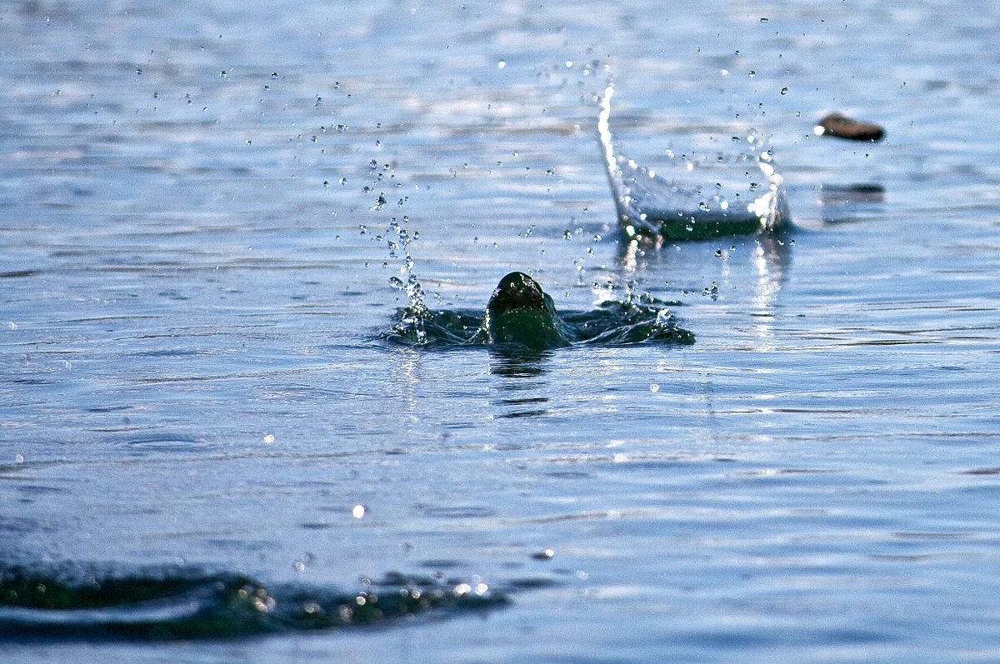

O escopo deste projeto é a modelagem e entendimento do mundo físico. Em que modelamos uma solução para um determinado problema utilizando parâmetros naturais e fórmulas físicas, fazendo diagramas de estoques e fluxos, criando formulas a partir deles. Assim podemos criar gráficos em Python ou Excel e assim procurar entender o funcionamento de um determinado sistema. Meu trabalho foi a modelagem do “stone skipping”, em que encontramos os parâmetros ideais para o maior número de pulos possíveis, a melhor pedra e o melhor angulo de lançamento, através de fórmulas matemáticas e a utilização de gráficos.
Neste projeto estudamos os impactos e a relação que a tecnologia possui na sociedade. Meu projeto foi o estudo e analise do impacto que a empresa Apple causou no design e na revolução dos dispositivos. Neste projeto descobrirmos que a Apple não criou nada, mas sim soube copiar a ideia de outras pessoas e modifica-las ou melhorar-las para entregar um produto diferenciado e revolucionário no mercado, ganhando da concorrência e assim atingindo o marco de empresa com maior valor no mercado financeiro e pioneira em revolução e mudanças tecnológicas. Hoje a empresa se encontra em decadência após a morte de seu fundador e visionário Steve Jobs, perdendo espaço para grandes marcas como a Sony e a Samsung e apresentando produtos sem grandes mudanças e com baixíssimo custo benéfico.
O projeto de eletrônica tinha como objetivo nos introduzir ao conceito de elétrica e a utilização do Arduino, dispositivo Italiano que ajuda no processamento de tarefas e facilita na parte elétrica do circuito. O projeto era sobre a fabricarão e funcionamento de uma estação metrológica medindo diversos eventos como temperatura, qualidade do ar, humidade entre outros mostrando os resultados em um monitor para o usuário.
O projeto de programação tinha o intuito de ensinar e utilizar a programação em Python para poder aprender a lógica do código e sua funcionalidade. Neste projeto o desafio era a criação de um jogo funcional de corrida apelidado de TimeRace em que os jogadores tinham que competir para fazer o melhor tempo com tipos diferentes de carros.
O desafio deste projeto era agradar um público difícil, crianças sendo elas que avaliariam o funcionamento de grau de divertimento do brinquedo criado por nos. Primeiros começamos avaliando o perfil de nossos usuários e depois começamos o planejamento e fabricação do brinquedo sempre recebendo feedbacks de profissionais da área. O projeto tinha como critério ser bioinspirado e portanto eu e meu grupo decidimos adotar o estilo da arvore e do pássaro criando uma arvore que se tornaria arcos pontuados levando a criança a aprender matemática de um jeito divertido e pássaros coloridos de papel para tornar a brincadeira cheia de cores.